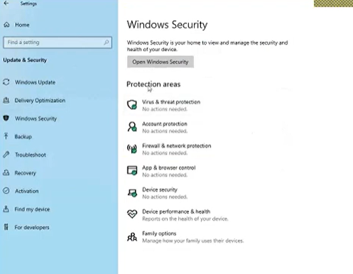

Windows Defender
Windows Defender, Microsoft'un ücretsiz antivirüs yazılımıdır. Windows 8'den itibaren tüm Windows işletim sistemlerinde varsayılan olarak yüklü gelir. Windows Defender, bilgisayarınızı virüsler, casus yazılımlar, truva atları, solucanlar, kötü amaçlı yazılımlar, fidye yazılımları ve diğer kötü amaçlı yazılımlardankorumak için tasarlanmıştır.
